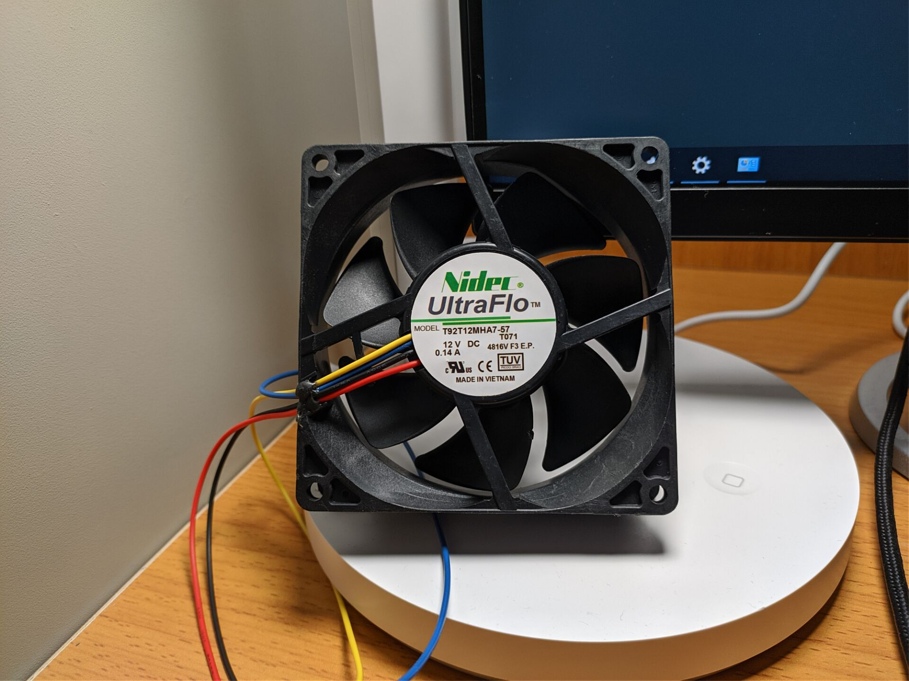

日本电产Nidec T92T12MHA7-57 12V 0.14A 9CM工业风扇随笔
天气逐渐热起来了，内存超频最重要的一点就是散热，四根内存发热量更加不容乐观，于是我便在论坛检索相关散热方案，被动散热全靠规模，但我在淘宝没看到啥规模够大的散热马甲，以前DDR3时代还有顶着热管的马甲，高度感人，图我就不放了...
主动散热是最棒的。于是乎，我找到了日本电产Nidec的T92风扇。T92风扇之前在玩家之间便小有名气，甚至被称为9cm风扇之王。两个汕头发货的翻新洋垃圾只要24包邮，这价格对比高性能12CM风扇动辄就上百的价格简直就是白给。
到手后分别对这俩风扇进行上机测试，T92最高转速可达到4000转，这时候噪音也起飞了，吹内存2000转就够用，该转速处于甜点区间，没有共振也没有风噪轴噪。但是其中一个风扇在2000转之后会产生明显共振，另一个则不会，购买洋垃圾得注意风扇个体体质差异极大这点，反正便宜建议多买几个，再从中挑体质好的。
这种风扇搭配淘宝买的磁吸支架就可以直接吹内存。C9BJZ因为没有温度传感器无法横向前后对比差异。后来我换了OlOy白金战鹰特挑镁光B-die，电压1.6V，风扇开启前仅靠机箱风扇散热，待机温度为50多度，风扇开启后内存不到40度，降温效果极为可观，妈妈再也不用担心打游戏内存过热报错闪退了!